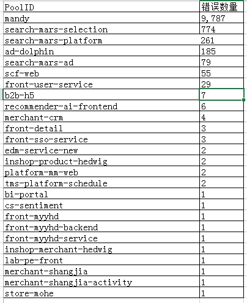

关于任务取消相关异常的排查
背景：
最近有些应用中会时不时的抛出如下异常：
++++ exception thrown while trying to get object from cache for key: key值; host:10.4.37.175:11241 -- null |

异常原因：
调用方使用了 Thread.interrupt 方法 或者 Future.cancel方法。
解决办法：
在调用ycache的线程中，去掉Future.cancel 或者 Thread.interrupt 方法使用。
调用过程分析：
1. 当调用方使用ycache的MemCachedClient.get方法时，就会调用SocketChannelImpl.read 方法，在读操作前运行 begin方法，读操作后使用 end方法
public int read(ByteBuffer dst) throws IOException {
try {
begin();
bytesRead = in.read(buf, 0, bytesToRead);
} finally {
end(bytesRead > 0);
}
}
2. in.read前执行begin()，此时创建Interruptible 的interruptor 对象。
interruptor = new Interruptible() {
public void interrupt() {
synchronized (closeLock) {
if (!open)
return;
interrupted = true;
open = false;
try {
AbstractInterruptibleChannel.this.implCloseChannel(); // 关掉ChanelSocket
} catch (IOException x) { }
}
}
}
3. 当 in.read 在执行且尚未执行完，此时调用方代码 执行了Thread.interrupt 或者 Future.cancel 时，就会调用当前线程interruptor的interrupt方法，
将interrupted 设置为true，同时关掉socket
public void interrupt() {
if (this != Thread.currentThread())
checkAccess();
synchronized (blockerLock) {
Interruptible b = blocker;
if (b != null) {
interrupt0(); // Just to set the interrupt flag
b.interrupt();
return;
}
}
interrupt0();
}
4. in.read后执行end(true)，当没有读取到数据或者读取超时时，就会发生ClosedByInterruptException，代码如下
protected final void end(boolean completed)
throws AsynchronousCloseException
{
blockedOn(null);
if (interrupted) throw new ClosedByInterruptException();
if (!open) throw new AsynchronousCloseException();
}